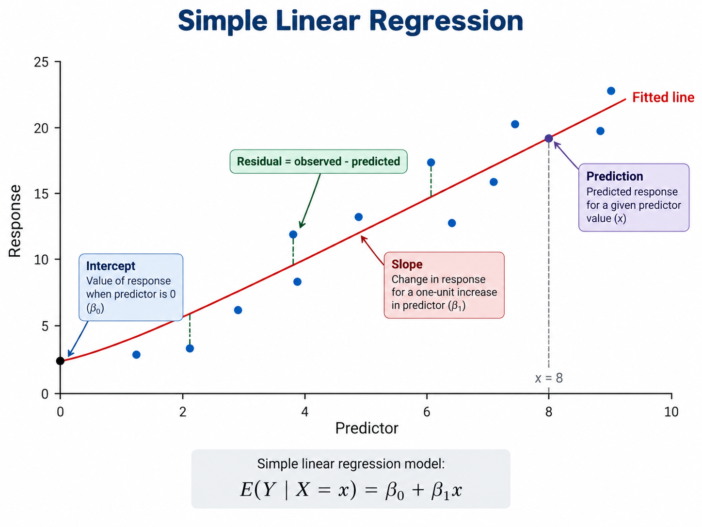
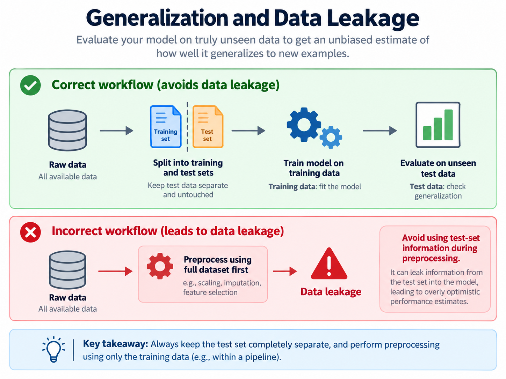

04 Regression and Prediction#
Big Idea#
Regression is one of the most common ways to describe relationships in data and use those relationships for prediction. It can help us describe how variables are related, estimate outcomes for new observations, and decide whether a model is useful enough to support a real decision.
In applied data science, the important skill is not just fitting a model. It is deciding what question the model answers, whether the relationship is meaningful, whether the evaluation is trustworthy, and how carefully the results should be communicated.
Note
A regression model is a tool for reasoning from data. It does not automatically reveal causes, guarantee accurate future predictions, or remove the need for human judgment.
4.1 From Relationships to Predictions#
Regression begins with a question. Sometimes the question is explanatory: which variables seem to be related, and how might we describe that relationship? Sometimes the question is predictive: given what we know now, what value should we expect for a new observation?
These questions are related, but they are not identical.
An explanatory question focuses on understanding a relationship.
A predictive question focuses on making a useful forecast for unseen data.
Every regression problem also requires us to distinguish between two roles:
the response variable, or the outcome we want to explain or predict
the predictor variables, or the features we use as evidence
For example, if we want to estimate house sale prices, the sale price is the response. Variables such as living area, neighborhood, or house condition may be predictors. If we want to estimate whether an online shopping session will end in a purchase, the response is binary and the predictors might include browsing behavior or traffic source.
Regression is often motivated by a visible relationship in a scatterplot or table, but that relationship should be interpreted carefully. A strong association does not prove that one variable causes the other. Two variables can move together because both are affected by a third factor, because the data were collected in a particular way, or because the pattern only holds in one context.
Note
Correlation is evidence of association, not proof of causation. A model can be useful for prediction even when it does not identify the real-world mechanism behind the pattern.
4.2 Simple Linear Regression#
The most familiar regression model is simple linear regression, which uses one predictor to model one numeric response with a fitted line.

Fig. 5 Simple Linear Regression.#
If a scatterplot suggests that larger values of a predictor tend to go with larger or smaller values of a response in a roughly straight-line pattern, a line can provide a useful summary. The line has two main pieces:
the intercept, which gives the model’s predicted starting point
the slope, which describes how much the predicted response changes for a one-unit increase in the predictor
Once the line is fit, we can plug in a predictor value and generate a prediction. But a fitted line is only useful if the predictions are reasonably close to what we observe.
The gap between an observed value and the model’s predicted value is called a residual. Residuals help us see where the model is doing well, where it is missing important structure, and whether a simple line is too crude for the problem.
Least squares and error#
One common way to fit a line is least squares, which chooses the line that makes the squared prediction errors as small as possible overall. Squaring the residuals gives extra weight to larger mistakes, which is one reason least squares is sensitive to unusually extreme observations.
Another approach is least absolute deviation (LAD), which minimizes absolute errors instead of squared errors. In an applied setting, the most important distinction is usually this:
least squares is common, efficient, and strongly influenced by large errors
LAD is often more robust when extreme outliers would otherwise pull the line too far
4.3 Multiple Linear Regression#
Real data problems rarely depend on only one predictor. Multiple linear regression extends the same idea by using several predictors at once.
This matters because one-variable relationships can be misleading. A predictor may appear strongly related to the response on its own, but that relationship can weaken, strengthen, or even change direction once other relevant variables are included. As a result, coefficients in a multiple regression model should be interpreted in context.
In a multiple regression model, a coefficient describes the expected change in the response for a one-unit change in that predictor while holding the other predictors fixed. That phrase matters. It means the coefficient is not a free-floating statement about the predictor in isolation.
Categorical predictors and indicator variables#
Not every useful predictor is numeric. Categories such as neighborhood, browser type, or treatment group often carry important information. To include them in a regression model, we typically represent categories using indicator variables (also called dummy variables).
An indicator variable marks whether an observation belongs to a category. For example, if a three-category variable is included in a model, one category is usually treated as the reference group and the others are represented with indicator columns. The resulting coefficients describe differences relative to that reference category.
The key idea is conceptual: categories can be modeled, but their coefficients are interpreted as comparisons, not as numeric distances.
4.4 From Continuous to Binary Outcomes#
So far, regression has described numeric outcomes such as price, revenue, or temperature. But many data science questions involve a binary outcome instead: yes or no, purchase or no purchase, churn or no churn.
Ordinary linear regression is not ideal for these problems because it can produce predictions below 0 or above 1, which do not make sense as probabilities. It also assumes a straight-line relationship on a scale that is poorly matched to a binary response.
Logistic regression provides a bridge from linear modeling to binary prediction. Instead of predicting the binary outcome directly, it predicts the probability that the outcome belongs to one class. Those probabilities can then be converted into a classification decision using a threshold.
For Week 04, the main idea is not the full mathematics of the logistic function. It is the modeling shift:
linear regression predicts a numeric outcome
logistic regression predicts a probability for a binary outcome
classification decisions depend on how those probabilities are interpreted and thresholded
4.5 Does the Model Actually Predict?#
A regression model can fit the data we already have and still fail on new data. That is why model evaluation must focus on generalization, not only on how closely the model matches the training set.

Fig. 6 Generalization and Data Leakage.#
To do this well, we usually separate data into different roles:
Data split |
Main purpose |
|---|---|
Training data |
Fit the model |
Validation data |
Compare alternatives and tune decisions |
Test data |
Check the final model on unseen data |
This structure helps protect us from data leakage, where information from the evaluation data slips into model design and makes performance look better than it really is.
Evaluation is also where you can see underfitting and overfitting:
underfitting happens when the model is too simple to capture an important pattern
overfitting happens when the model adapts too closely to the quirks of the training data and performs worse on new data
Regression performance can be summarized with measures such as MAE, RMSE, or R-squared, but the main lesson here is conceptual: a model is only useful if its evaluation matches the kind of decision we care about.
Note
A model with strong training performance may still be unreliable if preprocessing, model selection, or evaluation has used information from the test data.
4.6 When Regression Can Mislead#
Regression is powerful, but it can also create false confidence when its limits are ignored.
Assumptions as practical cautions#
Linear regression works best when the relationship is reasonably linear and when the error pattern is not wildly inconsistent across the data. Residual plots and other checks can reveal warning signs such as curvature, changing spread, or a model that systematically misses one region of the data.
Unusual observations#
Some observations matter more than others. Outliers, leverage points, and data-entry mistakes can change the fitted model and distort the story we tell from it. These cases are not automatically deleted, but they should trigger investigation.
Extrapolation#
A model is usually most trustworthy near the range of data on which it was trained. Predictions far outside that range are extrapolations, and they are often much less reliable than the model output may appear.
Confounding and causal overreach#
Even when a coefficient is stable and a prediction is accurate, that does not mean the predictor causes the response. A third variable may influence both. Data collection choices may also shape the pattern. Predictive relationships are evidence about what tends to move together in the observed data, not direct proof of what would happen under intervention.
4.7 Communicating Model Results#
A good regression write-up explains what the model supports without claiming more than the evidence can justify.
That usually means communicating:
what outcome was modeled
which predictors were used
what the main relationships or predictions suggest
how the model was evaluated
what uncertainty or limitation remains
The most common communication mistakes are overstatement and vagueness. Saying that a model “proves” a claim is usually too strong. Reporting a coefficient without context may confuse the audience rather than inform them. Reporting high model performance without explaining the evaluation setup can also be misleading.
Clear communication should connect the statistical result to the practical question. A model can be mathematically strong and still not be useful enough for a real decision if the prediction error is too large, the evaluation context is weak, or the relationship is easily misinterpreted.
4.8 Regression in the AI Era#
AI tools can now fit models, write code, summarize coefficients, recommend features, and even draft conclusions. That speed is useful, but it does not replace the need for human reasoning.
You still need to decide:
whether regression is appropriate for the question
whether the response and predictors are defined sensibly
whether the evaluation design avoids leakage and reflects the future use case
whether the model seems underfit, overfit, or unstable
whether the interpretation confuses association with causation
whether the final conclusion is careful enough for the audience and decision context
Note
AI can automate parts of model building. It cannot take responsibility for whether the question, evidence, evaluation, and interpretation actually make sense.
Key Takeaways#
Regression helps connect observed relationships to predictions, but explanation and prediction are not the same goal.
A simple linear regression line gives predictions, while residuals show where those predictions miss.
Multiple regression changes how coefficients are interpreted because predictors are considered together.
Logistic regression extends the regression idea to binary outcomes by modeling probabilities.
A model should be judged on unseen data, not only on how well it fits the training set.
Assumptions, unusual observations, extrapolation, and confounding can all make regression misleading.
Strong model communication explains both what the model shows and what it cannot establish.
In the AI era, generating a model is easier; evaluating whether it is trustworthy is still a human task.
References#
This module synthesizes open educational source material on prediction and regression and adapts it for the course’s Week 04 learning goals.
Yu, B., & Barter, R. Veridical Data Science. Chapter 8: An Introduction to Prediction Problems.
https://vdsbook.com/08-prediction_introYu, B., & Barter, R. Veridical Data Science. Chapter 9: Continuous Responses and Least Squares.
https://vdsbook.com/09-lsYu, B., & Barter, R. Veridical Data Science. Chapter 11: Binary Responses and Logistic Regression.
https://vdsbook.com/11-ls_binary